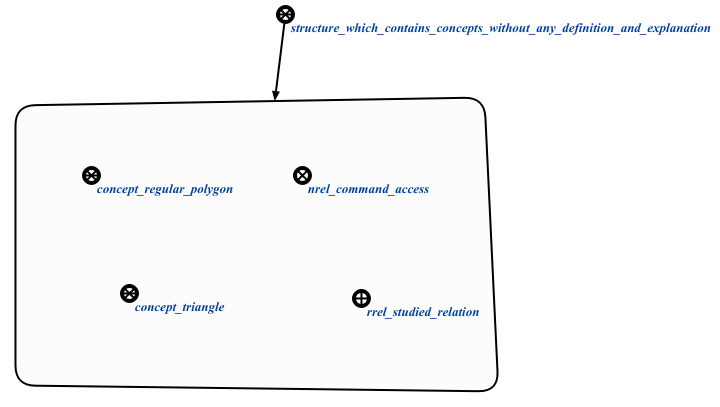

Команда проверки наличия определения или пояснения у понятия с заданным контекстом предназначена для поиска понятий из заданного контекста, которые не имеют ни определения, ни пояснения. Первым аргументом команды является стуктура, элементы которой надо проверить на наличие определения или пояснения. Вторым аргументом является контекст, в рамках которого необходимо проверить наличие определения или пояснения у элементов из первого аргумента. Результатом выполнения запроса является множество понятий, в которых нет ни пояснения, ни определения:
